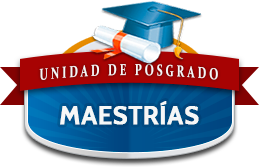

UNIVERSIDAD NACIONAL PEDRO RUIZ GALLO
LAMBAYEQUE - PERÚ
Proceso para inscribirse
1
Inscríbete dando clic en el botón de inscribirse, llena el formulario.
2
Luego 24 horas de tu inscripción puedes acercarte al banco a pagar.
3
Para completar el proceso se debe presentar la documentación requerida.
Inscribirse
Admisión
2019 - I
Inscripciones
Del
03
de
Enero
al
23
de
Abril
Examen de admisión
28
de
Abril
Segunda_Especialidad
Psicopedagogía
Problemas de Aprendizaje
Asesoría y Tutoría
Psicología
Psicología Forense Criminal y Penitenciaria
Didáctica En
Educación Inicial
Educación Primaria
Educación Inglés
Educación Física
Maestría

Ciencias de la Educación
Investigación y docencia
Psicología cognitiva
Docencia y Gestión Universitaria
Gerencia Educativa Estratégica
Didáctica del idioma inglés
Educación Intercultural
Psicología
Mención en Psicología Clínica
Mención en Gestión Pública y Gerencia Social
Doctorado
Ciencias de la Educación
Sociología